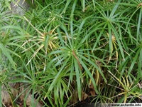
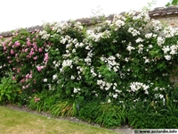
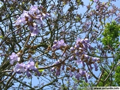

Nous retrouvons sous la dénomination de plantes, l'ensemble des éléments qui composent un paysage jardinier urbain: il s'agit d'un ensemble
hétéroclite composé de plantes bulbeuses, cactus, palmiers, grimpantes ou succulentes, c'est à dire d'une maniére générale arbres, arbustes, fleurs, aquatiques, vivaces etc..
Différents portraits botaniques
Le jardinier urbain doit composer avec une multitude de milieux contraints, qui partagent tous des inconvénients
de pollution, d'asséchement prolongé et de faiblesse en nutriments naturels. La tâche consiste alors à choisir les plantes qui sauront se développer d'une maniére relativement autonome,
dans cet environnement hostile.
Multiplier les espaces

Afin de redonner son importance aux plantes en milieu urbain, l'ingéniosité des jardiniers n'a pas de limites. L'utilisation de pots comme mobiliers urbains, de sacs, les plantations verticales,
en façades, sur les toits, voire hors sols sont autant de variantes qui permettent aux plantes de reconquérir des espaces auparavant considérés comme improbables.
Paulownia tomentosa

Famille: Scrophulariacées